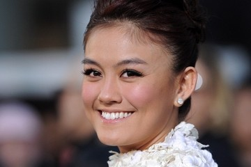

Agnez Mo
Agnez Mo is a an indonesian singer,songwriter,and actress

Agnes monica Muljoto known by her stage name Agnez Mo
Agnes Monica Muljoto was born on 1 July 1986 in Jakarta, in a family of Chiness ancestry. She is the Youngest child of Jenny Siswono,a former table tennis player,and Ricky Muljoto,a former basketball player.Her elder brother ,steve Muljoto is her manager.
She started her career in the entertainment industry at the age of 6 as a child singer.She is a singer with the most number of awards in Indonesia.She achieved a Best Asian Artist Award on the 2012 Mnet Asian Music Awards in South Korea. In additian she has been trusted to be anti-drug abassador in Asia as well as the abbassador of MTV EXIT in combating human traficking.
Career
- 1986: Born in Jakarta
- 1992: First children's album,Si Meong
- 1995 : Second Children's album,Yess!
- 1996 : Last children's album,Bala-bala
- 1999-2000 : She was awarded "Most favourite presenter of children.s program" at the Panasonic Gobel Awards in 1999 and 2000 for Tralala-trilili.
- 2001-2002 : Starred in the TV series,Pernikahan dini and sing the soundtrack of that series,Pernikahan dini and Seputih hati.
- 2003 : Released her first adult album,and the story goes.And later certified double platinum after selling more than 300,000 copies.
- 2004 : Received ten nominations at the Anugerah Musik Indonesia for album "the story goes.She also won "Best Female Newcomer Artist" at the Anugerah Planet Muzik in Singapore.
- 2005 : Launched her second studio album, Whaddup A.. '?!,
- 2006 : she won two 2006 Anugerah Musik Indonesia for "Best Pop Female Solo Artist" and "Best R&B Production Work".[20] She also won the "Most Favorite Female" award at the 2006 MTV Indonesia Awards.
- 2007 : Agnes was appointed by the Drug Enforcement Administration (DEA) and the International Drug Enforcement Conference (IDEC) Far East Region as an Asian anti-drug ambassador.
- 2008 : start began working on her third album and released the first single, "Matahariku" that got best-selling single with sales.
- 2010 : She was choosen as an international red carpet host for the Annual American Music Awards On 21 November 2010 at the Nokia Theatre in Los Angeles.
- 2013 : she released her fourth studio album, Agnez Mo, which introduced her new stage name instead of 'Agnes Monica'.
- 2016-Present : Joined the coaching panel of the season 2 of The Voice Indonesia
"Dream, Believe, and Make it Happen"
Agnez Mo'slogan
If you have time, you should read more about this incredible human being on her Wikipedia entry.